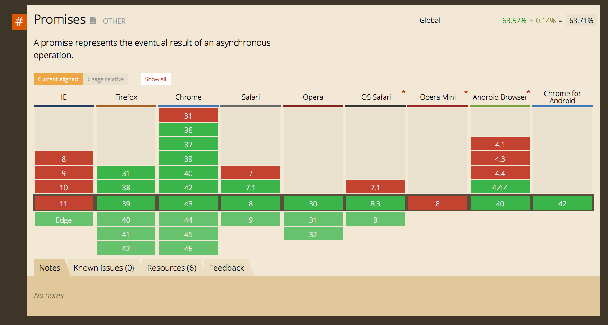
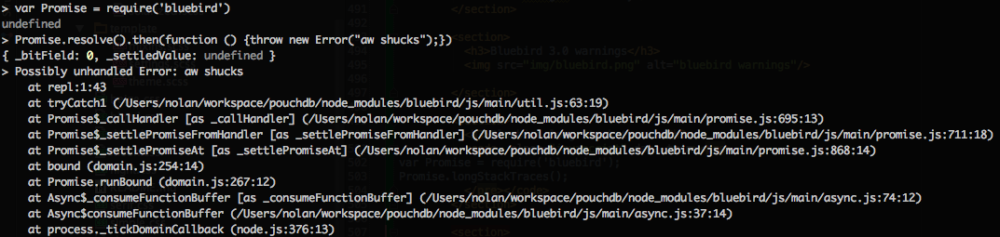
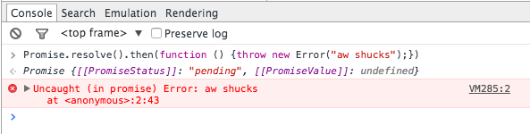
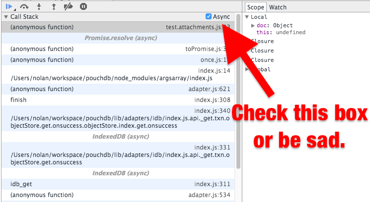
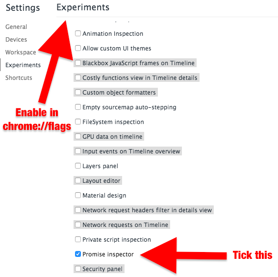
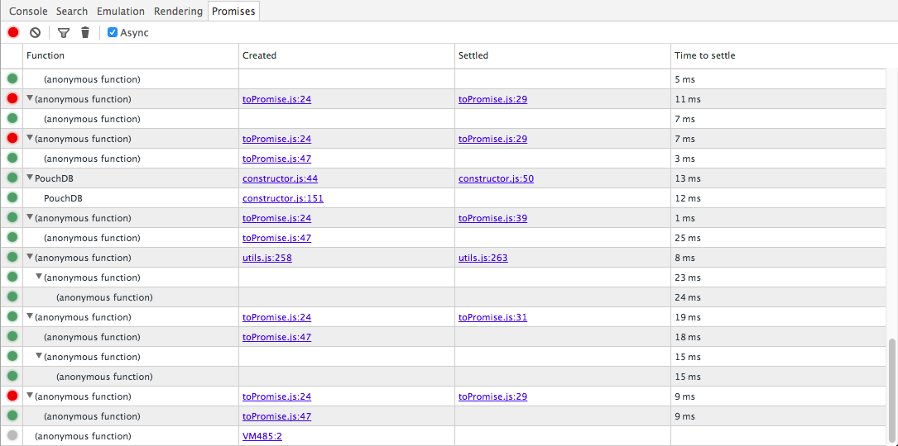
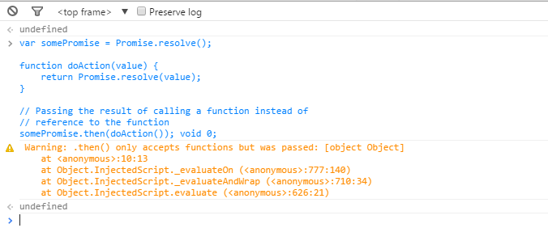

Understanding promises
@nolanlawson
You may remember me from


Callbacks vs promises
// callbacks
fs.readFile('myfile.txt', function (err, contents) {
if (err) {
return handleError(err);
}
handleFile(contents);
});
// promises
fs.readFileAsync('myfile.txt')
.then(handleFile)
.catch(handleError)
});Why do we need promises in JavaScript?
JavaScript is single-threaded


JavaScript XHR
var xhr = new XMLHttpRequest();
xhr.onerror = function (err) {
// handle success
};
xhr.onload = function (res) {
// handle error
};
xhr.open('GET', 'http://oursite.com/ourapi/');
Node.js fs
var fs = require('fs');
fs.readFile('/tmp/myfile.txt', 'utf-8', function (err, text) {
if (err) {
// handle error
} else {
// handle success
}
});
The pyramid of doom
Promises to the rescue!
Top 3 worst promise mistakes
1. The promisey pyramid of doom
doSomething().then(function () {
doSomethingElse().then(function () {
doAnotherThing().then(function () {
// handle success
}).catch(function (err) {
// handle error
});
}).catch(function (err) {
// handle error
});
}).catch(function (err) {
// handle error
});
1. Solution: don't do that
doSomething().then(function () {
return doSomethingElse();
}).then(function () {
return doAnotherThing();
}).then(function (result) {
// handle success
}).catch(function (err) {
// handle error
});
2. Forgetting to catch()
playWithFire().then(function () {
return liveDangerously();
}).then(function () {
return betTheFarm();
}).then(function (result) {
// handle success
}); // ← forgot to catch. any errors will be swallowed
2. Solution: add a catch()
playWithFire().then(function () {
return liveDangerously();
}).then(function () {
return betTheFarm();
}).then(function (result) {
// handle success
}).catch(console.log.bind(console)); // ← this is badass
3. Forgetting to return
goToTheATM().then(function () {
grabMyCash();
}).then(function () {
grabMyCard();
}).then(function (result) {
// grabMyCash() and grabMyCard()
// are not done yet!
}).catch(console.log.bind(console));
3. Solution: always return or throw inside a then() function
goToTheATM().then(function () {
return grabMyCash();
}).then(function () {
return grabMyCard();
}).then(function (result) {
// yay, everything is done
}).catch(console.log.bind(console));
Promises - the one weird trick
someLibrary.doSomething().then(function () {
// I'm inside a then() function!
});
Promises - the one weird trick
someLibrary.doSomething().then(function () {
// 1) return another promise
return someLibrary.doSomethingElse();
// 2) return a synchronous value
return {hooray: true};
// 3) throw a synchronous error
throw new Error('oh noes');
});
Promises - the one weird trick
db.get('user:nolan').then(function (user) {
if (user.isLoggedOut) {
throw new Error('user logged out!'); // throwing a synchronous error!
}
if (inMemoryCache[user.id]) {
return inMemoryCache[user.id]; // returning a synchronous value!
}
return db.get('account:' + user.id); // returning a promise!
}).then(function (userAccount) {
// I got a user account!
}).catch(function (err) {
// Boo, I got an error!
});
OK, how do I use promises?
window.Promise in browsers

Promises in libraries
- q
- when
- bluebird
- lie
- Angular $q
- Ember RSVP
- Flux/React (BYOP - bring your own promises)
- More: promisesaplus.com/implementations
Node-style → Promise-style
var bluebird = require('bluebird');
var fs = bluebird.promisifyAll(require('fs'));
fs.readFileAsync('/tmp/myfile.txt', 'utf-8').then(function (text) {
// handle success
}).catch(function (err) {
// handle error
});
Things that are not Promises ಠ_ಠ
- async
- jQuery promises
- jQuery deferreds
- Angular deferreds
- Anything spelled "deferred"
Anti-footgun artillery
Uncaught error - silently ignored :(
Promise.resolve().then(function () {
throw new Error("aw shucks");
});

Node.js and non-Chrome browsers don't log this.
Uncaught error - warning logged! :)
 Bluebird and Chrome native Promises show warnings.
Async stacktraces in Chrome
Experimental Chrome dev tools
Experimental promises tab
Bluebird 3.0 warnings
Onward with ES7 async/await
With ES6
function createDocAndReturnIt() {
return db.post({}).then(function (result) {
return db.get(result.id);
});
}With ES7 async/await
async function createDocAndFetchIt() {
let result = await db.post({});
return await db.get(result.id);
}
With ES6 (more complex)
function getDocOrEmpty(id) {
db.get(id).catch(function (err) {
if (err.status === 404) { // not found
return {}; // empty doc
}
throw err; // some error other than 404
});
});With ES7 async/await (more complex)
async function getDocOrEmpty(id) {
try {
return await db.get(id);
} catch (err) {
if (err.status === 404) { // not found
return {}; // empty doc
}
throw err; // some error other than 404
}
}